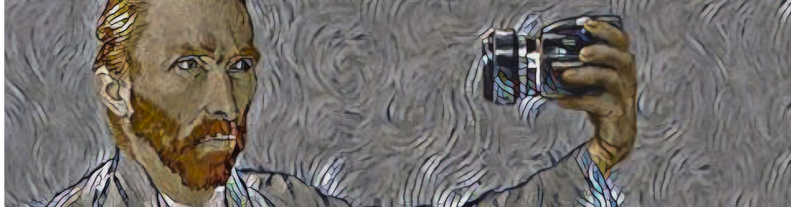
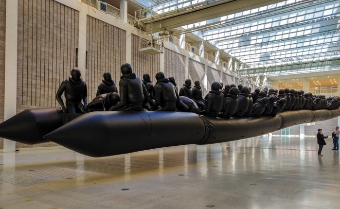
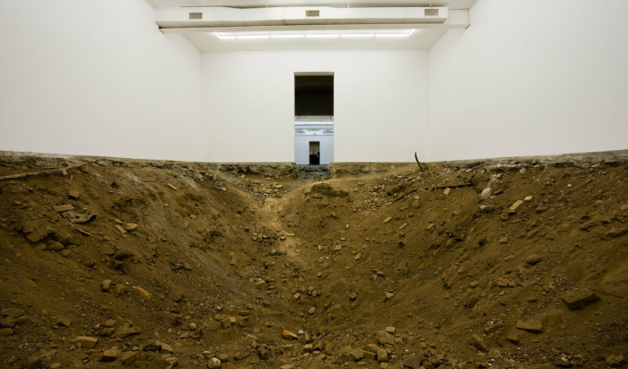

Найголовніше в цьому питанні - це усвідомити, що
поняття "мистецтво" сприймається кожним по-різному. Для нього немає єдиного визначення та рамок. Якось
американський скульптор і майстер мінімалізму Дональд Джадд (Donald Judd) сказав: «Мистецтво — це все,
що вважається мистецтвом». Наприкінці 1960-х років воно набуло свободи від усіх усталених правил і
обмежень, перетворившись на щось зовсім нове і дивовижне. Але як по-справжньому його відчути цілком
звичайній людині? Особливо, коли сучасне мистецтво таке безмежне та багатоформне.
Сучасне мистецтво та його місце:
Деякі художники шляхом використання значущості мистецтва висловлюють своє ставлення до нього та
його залежності від грошей і арт-ринку. Наприклад, Урс Фішер (Urs Fischer). Цьому американському
художнику належить незвичайна і вражаюча інсталяція Ти. З перших секунд вона вводить людину в
стан нерозуміння того, що відбувається. Посередині — велика земляна дірка у підлозі, а довкола
прості білі стіни куба. Що цим хотів показати автор? Можливо те, що багато хто з нас, що стоять
на землі, не здатний побачити нічого, крім власного «Я».

Сучасне мистецтво та соціальна
позиція:
Окрім естетичної функції мистецтво може виражати і громадянську позицію автора. Такими методами
користується китайський художник Ай Вейвей (Ai WeiWei). У цій похмурій шлюпці знаходяться 300
надувних людських фігур — дорослі та діти. З цією інсталяцією він звернувся до влади Австралії,
закликаючи їх поставитися з розумінням і людяністю стосовно біженців.
